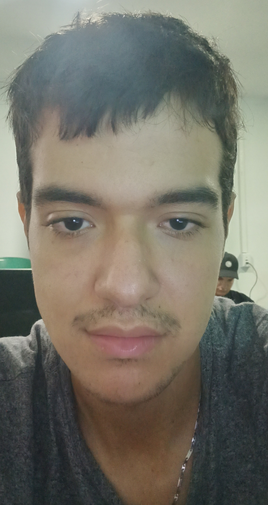

| Biografia | perfil |  |
Nombre completo: Steve Bonilla Edad: 24 años Steve es un joven de 24 años con una mentalidad creativa y un enfoque determinado hacia sus metas. Desde temprana edad mostró interés en Diseño lo que lo llevó a desarrollar habilidades destacadas en ese campo. Después de completar sus estudios en Autonoma de occidente Steve ha estado involucrado en trabajo independiente, donde ha demostrado ser una persona innovadora, comprometida y con gran capacidad para resolver problemas. Fuera del ámbito profesional, Steve es un apasionado de las series y videojuegos y Le gusta aprender cosas nuevas, compartir con sus amigos y mantenerse activo en su comunidad. |
||||||
|---|---|---|---|---|---|---|---|---|---|
| Hobbies | |||||||||
|
|||||||||
| Sitios visitados | |||||||||
|
|||||||||
| Valores representativos | |||||||||
|
|||||||||